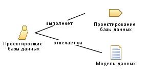

| Роль: Проектировщик базы данных |
 |
|
Взаимосвязи
 |
||
| Изменяет |
|
|
|---|---|---|
Основное описание
|
В большинстве проектов разработки программ для хранения данных используются реляционные базы данных. Задачей проектировщика базы данных является разработка подробной структуры базы данных, включая таблицы, индексы, представления, ограничения, триггеры, хранимые процедуры и прочие структуры, необходимые для хранения, получения и удаления перманентных объектов. Эта информация хранится в рабочем продукте Модель данных. Набор задач, выполняемых проектировщиком базы данных, зависит от размера и сложности проекта, а также от типа используемого механизма хранения данных. |
Персонал
Дополнительные сведения
| Концепции |
|---|
© Copyright IBM Corp. 1987, 2006. Все права защищены.. |